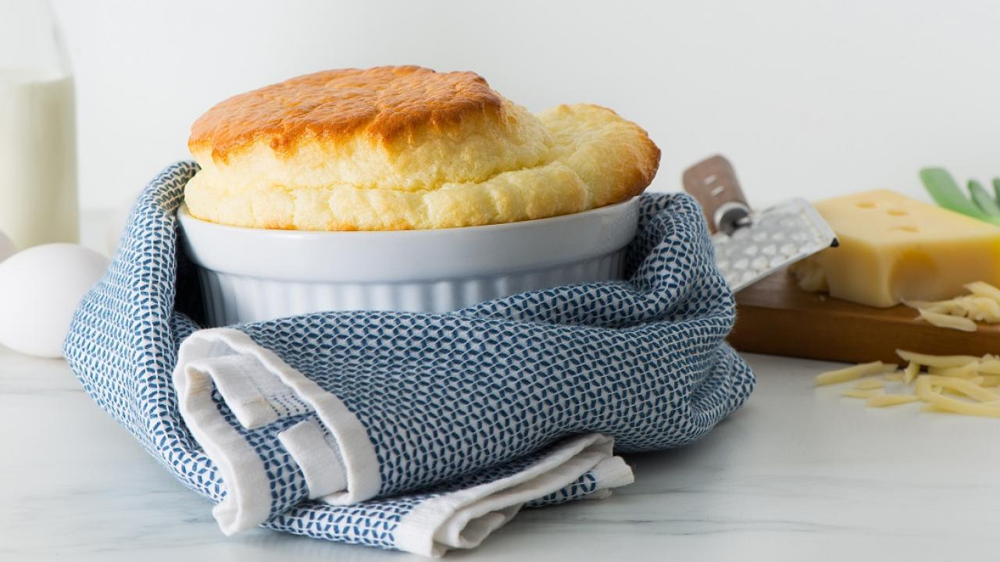

Home

Description
This light and airy dessert is sure to please
Ingredients
- 2 tbsp butter
- 2 tbsp all-purpose flour
- 1/2 tsp salt
- Pinch pepper
- 3/4 cup milk (1%)
- 4 egg yolks
- 2 egg whites
- 1/4 tsp cream of tartar
Steps
- Preheat oven to 375° F
- Melt butter in medium saucepan over low heat. Stir in flour, salt and pepper. Cook, stirring constantly, until mixture is smooth and bubbly. Stir in milk all at once. Continue stirring until mixture boils and is smooth and thickened.
- Separate eggs. Beat yolks well and add 1/4 cup (50 mL) of warm sauce mixture to egg yolks.
- Combine yolk mixture with remaining sauce, blending thoroughly. If desired, add finely chopped filling ingredients, stirring into white sauce until blended (see variations). Set sauce aside to cool slightly.
- Beat egg whites and cream of tartar in large bowl, until stiff but not dry. Fold some of the egg whites into sauce to make it lighter, then gently but thoroughly fold the sauce into the remaining egg whites.
- Carefully pour into 4-cup (1 L) soufflé or casserole dish.
- Bake in preheated 375° F (190° C) oven until puffed and lightly browned, 20 to 25 minutes or until done. Serve immediately.